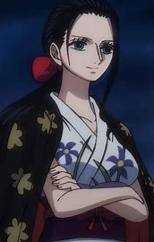

Alias: Anak Iblis. Jabatan: Arkeolog. Tebusan/Bounty: ฿930.000.000
Nico Robin,[17] juga dikenal dengan julukannya "Anak Iblis"[7] dan "Cahaya Revolusi",[8] adalah arkeolog Bajak Laut Topi Jerami dan salah satu Perwira Senior Armada Besar Topi Jerami. [3] Dia adalah anggota kru ketujuh dan keenam yang bergabung, melakukannya di akhir Arc Arabasta. Dia untuk sementara meninggalkan kru selama Arc Air 7 tetapi bergabung kembali selama Arc Lobi Enies.
Lahir dalam keluarga arkeolog, Robin adalah putri Nico Olvia. Robin memakan Hana Hana no Mi di usia muda, memberinya kekuatan untuk mereproduksi bagian tubuhnya (atau seluruh tubuhnya) di permukaan apa pun sesuka hati. Sebagai satu-satunya yang selamat dari pulau Biru Barat Ohara yang hancur, dia saat ini adalah salah satu dari hanya dua orang di dunia yang diketahui memiliki kemampuan untuk membaca dan menguraikan Poneglyphs, keterampilan yang dianggap terlarang dan mengancam Pemerintah Dunia.
Dia bertindak sebagai wakil presiden Baroque Works sebagai "Miss All Sunday",[1] melayani dan bermitra langsung dengan presiden organisasi; mantan Panglima Perang: Crocodile, yang beroperasi dengan nama sandi "Mr. 0". Dia adalah antagonis sekunder dari Arabasta Saga, sebelum bergabung dengan Topi Jerami. Mimpinya adalah menemukan Rio Poneglyph yang menceritakan sejarah dunia yang sebenarnya, khususnya Void Century.
Dia mendapatkan hadiah 79.000.000 pada usia 8 tahun karena kemampuannya membaca poneglyph setelah kehancuran Ohara. Itu kemudian meningkat menjadi 80.000.000 setelah Topi Jerami menyerbu Lobi Enies untuk menyelamatkannya dan melarikan diri. Setelah Arc Dressrosa, itu ditingkatkan menjadi 130.000.000. Setelah Serangan di Onigashima, hadiahnya meningkat menjadi 930.000.000.
Nico Robin adalah seorang wanita muda yang tinggi dan ramping dengan rambut hitam sebahu yang ditata dengan potongan hime klasik dan mata yang memiliki pupil gelap dan lebar (matanya digambarkan berwarna coklat di manga serta film kesepuluh dan kedua belas; sedangkan di anime, matanya digambarkan berwarna biru cerulean). Dia juga memiliki hidung yang panjang, kurus, dan tegas. Di anime, warna kulit Robin memiliki warna cokelat yang sedikit lebih gelap tidak seperti pada karya seni berwarna manga yang lebih terang. Robin juga sangat mirip dengan ibunya, dengan pengecualian warna dan gaya rambutnya serta memiliki warna kulit yang sedikit lebih gelap darinya. Anggota tubuh Robin sangat panjang, terutama kakinya, berkontribusi besar pada kemampuan bertarungnya (mengingat sifat kekuatannya) dan tinggi badan secara keseluruhan.
Dia tidak memiliki ciri khas seperti yang lain, meskipun penampilan cowgirl serba ungu dari saat dia pertama kali diperkenalkan sering dikaitkan dengan penampilan khasnya. Seperti Nami, Robin tampaknya suka memperlihatkan pakaian karena dia sering mengenakan pakaian yang berwarna gelap (seringkali hitam atau ungu) atau terdiri dari kulit (terkadang keduanya). Dia juga menyukai sepatu hak tinggi, yang tampaknya tidak memengaruhi cara dia berjalan atau kecepatannya.
Robin kadang-kadang mengenakan ban lengan emas dengan pinggiran putih yang melekat padanya dengan huruf N di atasnya, yang merupakan singkatan dari nama keluarganya. Dia juga memiliki yang serupa dengan BW di atasnya, yang merupakan singkatan dari Baroque Works, tetapi tidak lagi memakainya karena dia tidak lagi berafiliasi dengan grup. Dia juga telah mengenakan topi pedalaman ungu dalam banyak kesempatan.
Di Arc Arabasta, dia mengenakan pakaian koboi terbuka yang terdiri dari korset ungu yang mengekspos belahan dada dan rok mini yang serasi, keduanya dengan ornamen putih yang tergantung di dalamnya, dan mantel berlapis bulu putih yang dipasangkan dengan topi koboi putih dan sepatu bot hak tinggi putih. Di akhir busur ketika dia mulai bepergian dengan Topi Jerami, dia mengenakan kemeja lavender lengan panjang berkancing yang lebih sederhana dengan celana ungu panjang dan sepasang sepatu bot ungu.
Di Arc Skypiea, bersama dengan Nami, Robin mengubah pakaiannya menjadi sesuatu yang lebih cocok untuk Angel Beach, beralih ke kemeja kuning tanpa lengan dan celana ungu yang mencapai betisnya (yang tidak akan basah saat dia berjalan di pantai), dengan ikat pinggang sederhana di pinggangnya. Dia mengenakan ornamen putihnya di lengan kirinya, dan tidak membutuhkan alas kaki di pantai, berkelana ke pantai tanpa alas kaki. Dia mengenakan Mary Janes sepatu hak tinggi ungu ketika dia membutuhkan sepatu untuk bepergian di sekitar Skypiea lainnya, dan begitu kru mulai menjelajahi reruntuhan Upper Yard, dia mengenakan topi koboi putih khasnya, yang masih dia kenakan untuk saat ini.
Dalam Long Ring Long Land Arc, dia mengenakan jaket ungu di atas blus dengan trim aquamarine, celana biru tua, dan sepatu bot yang serasi. Setelah dibekukan oleh Kuzan dan kemudian dicairkan, dia berganti pakaian yang lebih kasual untuk tetap hangat, terdiri dari kaus hitam sepanjang pinggang dengan tudung abu-abu tua, legging hitam yang mencapai tengah pahanya, dan sandal putih sederhana.
Di Water 7 dan Enies Lobby Arc, dia mengenakan gaun kulit pendek, hitam, yang memperlihatkan belahan dada dengan lengan panjang di atas apa yang tampak seperti gaun dalam putih yang lebih ringan. Dia juga mengenakan sepatu bot hitam sepatu hak tinggi paha.
Dalam Arc Lobi Pasca-Enies, dia terlihat mengenakan t-shirt merah muda ketat yang memiliki lambang Galley-La Company di bagian depan dan celana panjang hitam. Dia juga mengenakan sepasang sepatu hak tinggi putih. Kemudian, dia mengganti T-shirt dengan sweter berkancing ungu bergaris-garis ketat dan sepatu hak tinggi gelap.
Dalam Thriller Bark Arc, dia mengenakan gaun garnet pendek (ungu di anime) dengan tepi bordir renda, stoking mencapai pahanya yang dipegang oleh suspender, dan sepatu bot hak tinggi hitam dengan dua garis kancing di bagian depan.
Di Arc Kepulauan Sabaody, dia mengenakan pakaian hitam (ungu dalam anime) yang terdiri dari topi koboi, kemeja tanpa lengan yang memperlihatkan belahan dada, dengan kerah kuning lebar yang ditutupi dengan motif lingkaran konsentris hitam, celana serasi yang mencapai betisnya, dan Mary Janes berhak tinggi ungu. Dia juga memiliki untaian ornamen bulat dan kuning yang menggantung longgar di pinggangnya.
Saat dipenjara di Tequila Wolf, Robin mengenakan jumpsuit penjara biru satu potong, dengan dada terbuka. Saat menggunakan Tequila Wolf, warna kulit Robin tampak perlahan mencerahkan warnanya (mungkin karena cuaca dingin Tequila Wolf). Setelah dia diselamatkan oleh Tentara Revolusioner,
Dari Arc Return to Sabaody hingga menjelang akhir Arc Fish-Man Island, rambut hitam Robin (juga berwarna cerah) telah tumbuh lebih panjang, yang mencapai punggung bawahnya, dan ditarik ke belakang, sehingga lebih banyak memperlihatkan dahi dan telinganya. Setelah timeskip, pakaiannya sekarang adalah rok sarung salmon panjang yang memiliki desain rumput laut hijau dengan bunga merah dan kuning di sampingnya dengan ruffles yang memamerkan pinggulnya dengan rompi kulit biru tua lengan pendek (kadang-kadang ungu dalam manga dan beberapa media lainnya) dengan garis V-neck dan gambar Buah Iblisnya atau Chrysanthemum morifolium yang sebenarnya dicetak di payudara kiri dekat bahu yang memperlihatkan perutnya, pompa hak tinggi berwarna merah muda gelap (kadang-kadang merah di media lain), dan ransel merah muda lavender. Dia memakai kacamata hitam putih dengan lensa oranye (hitam di manga) yang dia gantung di dahinya dan terlihat memakainya selama pertempuran dengan Bajak Laut Manusia Ikan Baru di Gyoncorde Plaza.
Seperti Nami, payudara Robin juga tumbuh jauh lebih besar dan bulat, tetapi penampilannya tidak banyak berubah, kecuali fakta bahwa sosok jam pasir dan lekuk tubuhnya menjadi lebih menonjol. Warna kulit Robin tampak cerah dengan warna hingga warna kulit manga (mungkin karena waktu yang dihabiskan untuk berlatih di dalam ruangan). Tidak seperti anggota lainnya, Robin tidak tumbuh lebih tinggi karena dia tetap berada di 188 cm.
Setelah pertempuran untuk Pulau Manusia Ikan, Robin mengenakan gaun V-neck lengan panjang teal. Saat menjelajahi Burning Lands of Punk Hazard selama Punk Hazard Arc dengan beberapa rekan krunya, Robin melepas gaunnya karena panas untuk memperlihatkan kamisol bunga dan celana pendek hitam; Dia kemudian mengikat gaun itu di pinggangnya. Dia juga mengenakan sepatu hak tinggi dengan pakaian ini dan masih mengenakan kacamata hitam merek dagang barunya di dahinya. Dia kemudian mengenakan mantel musim dingin panjang berbintik-bintik di atas ini saat berada di Tanah Es pulau, yang dia ambil dari anggota wanita Unit Patroli Centaur Brownbeard.
Selama acara di Dressrosa, dia mengenakan gaun hitam yang sangat pendek. Itu berpotongan rendah, dan karenanya, sebagian besar payudaranya terlihat, serta kaki dan paha bagian bawahnya. Kostumnya juga termasuk kacamata hitam, sepatu bot hak tinggi hitam, dan topi bertepi lonceng putih. Dia juga memilih untuk mengenakan rambutnya dengan kuncir kuda tinggi. Topi itu adalah tindakan pencegahan ekstra yang dia gunakan untuk menyembunyikan wajahnya bersama dengan kacamata hitamnya untuk menghindari terlihat oleh musuh-musuhnya di pulau itu, terutama agen CP0. Dia juga untuk sementara menyamar sebagai salah satu gerutu di Bajak Laut Donquixote, meminjam seragam yang mirip dengan pencuri dengan turtleneck lengan panjang gelap, celana kamuflase gelap, sepatu bot, sarung tangan, dan topi bertanduk yang unik (karena beberapa gerutu mengenakan tutup kepala yang unik).
Setelah peristiwa Arc Dressrosa, dia mengenakan tank top berwarna terang dengan tulisan "Corrida" di atasnya bersama dengan celana pendek berwarna gelap (tank top merah muda dan celana pendek ungu di anime).
Selama Arc Zou, dia mengenakan turtleneck ungu muda, celana pendek berwarna fuchsia gelap, dan sepatu hak krem.
Selama Wano Country Arc, dia mengikat rambutnya, mengenakan lipstik, dan mengenakan pakaian tradisional Geisha hitam. Pakaian keduanya adalah kimono ungu dengan pola kotak putih dan ungu. [18] Pakaian ketiganya terdiri dari pakaian kunoichi yang sebagian besar berwarna putih dengan pola bakung ungu, dan tsuke obi ungu tua dengan busur biru besar di belakang, serta obiage ungu muda, dan obijime merah. Dia juga memiliki jubah berlapis pola bunga gelap di bahunya, dan rambutnya diikat ke belakang dengan pita merah. [19] Ketika Kin'emon menggunakan kemampuan Buah Iblisnya untuk menyamarkannya, dia mengenakan pakaian Bajak Laut Beasts.
Selama Arc Egghead, Robin mengenakan jaket kulit hitam yang dipotong dan tidak berritsleting yang dihubungkan di ujung dengan ikat pinggang yang membungkus perutnya, dan melekat pada celana dalamnya dengan tali seperti garter. Dia tidak memakai celana dan memakai sarung tangan ungu, lubang suara oranye, dan sepasang Sepatu DOM hitam dengan kaus kaki setinggi paha oranye.
Selama Arc Elbaph, Robin menyuruh Brook memotong rambutnya agar sesuai dengan apa yang terjadi ketika dia bertemu Jaguar D. Saul, dan dengan perluasan gaya rambutnya dari sebelum timeskip. Akibatnya, dia sekarang membiarkan poninya turun lagi. Dia mengenakan tank top berwarna terang dengan jolly roger berbentuk hati di atasnya, serta celana pendek gelap. Setelah tiba di Western Village, dalam persiapan reuninya dengan Jaguar D. Saul, Robin berganti pakaian panjang gelap dengan sepatu bot gelap panjang; yang mirip dalam penampilan dengan pakaian yang biasa dia kenakan saat kecil. Setelah reuninya dengan Saul, Robin dikaruniai pakaian bergaya Viking yang dibuat oleh Gerd. Pakaian itu terdiri dari crop top kulit berwarna terang yang memperlihatkan perutnya, dengan jubah bulu pendek, serta celana kulit seperti rok dengan kaki celana kanan yang hilang. Pakaian itu juga mengenakan ikat pinggang kulit dengan serangkaian strip dekoratif yang menutupi kaki celana kiri, sepatu bot hak tinggi kulit panjang, dan sepasang ban lengan.